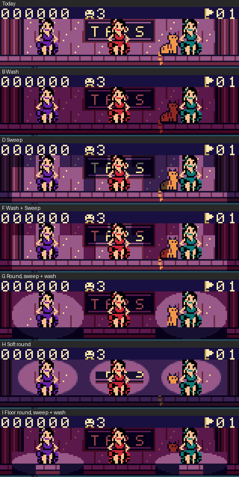
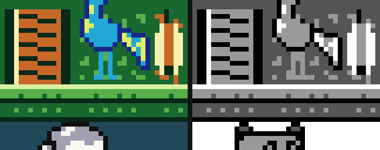
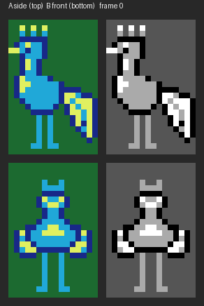
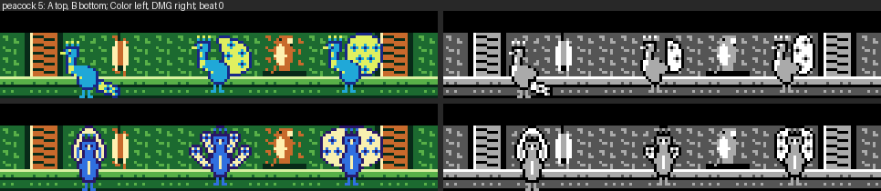
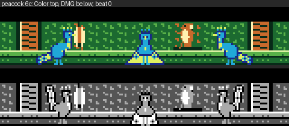

Open questions
Every question waiting on your answer, with its pictures. Answered questions come off this list. Reply in chat with the number, e.g. "Q12: shared".
1 open · updated 2026-11-03
Q35
Stage lighting during a show
Which stage lighting look should we build: B, D, F, G, H or I? Answer with a letter.
- B Wash: dark stage, tint changes with the beat; nearly free
- D Sweep and F Wash + Sweep: square pools that move with the beat; fit, tight
- G Round, sweep + wash: ovals reaching the floor; needs a timing problem solved first
- H Soft round: ovals with soft edges, floor stays dark; the round look that fits today
- I Floor round: pools on the floor only; needs the same timing fix as G
- Round edges flatten what they cross: the sign turns into a dark bar here; an art pass can keep more of it
- Color only; the DMG is unchanged

View
Peacock versions
Pass 1

Pass 2

Pass 2 full

Pass 3

Pass 4

Pass 5

Pass 6

Pass 6b

Now

View
Robot lineup
Disco · groove · disco; Color over DMG

Before and now
Saloon dancer

Cheerleader